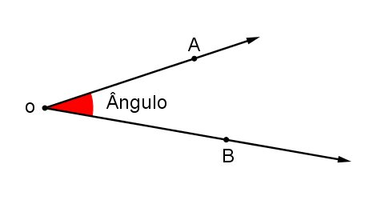

- Definição
- Elementos
- Tipos de ângulos
Definição:
Chama-se ângulo a região entre duas semirretas que partem
de uma mesma origem. Podemos dizer, ainda que um ângulo é a medida da abertura
de duas semirretas que partem da mesma origem.
Elementos
• Vértice: Ponto de origem das duas semirretas.
• Lados: Cada uma das semirretas.
• Abertura: Região interna determinada pelas semirretas.
TIPOS DE ÂNGULOS:
• Reto:
O ângulo reto tem medida de 90º graus.
• Obtuso:
O ângulo obtuso tem medida maior que 90º graus.
• Agudo:
O ângulo agudo tem medida menor que 90º graus.
• Raso:
O ângulo raso tem a medida igual a 180º graus.
• Côncavo:
O ângulo côncavo tem medida maior que 180º e menor que 360º.
- Definição
- Conceitos
- Fórmula
Definição:
A probabilidade é um ramo da matemática que estuda maneiras de como estimar a chance de um determinado evento acontecer.
Conceitos:
• Experimento aleatório: São aqueles experimentos que, quando repetidos por diversas vezes e mantendo-se os processos de execução, resultam em resultados improváveis.
• Espaço amostral: Conjunto de todos os possíveis resultados de determinado fenômeno ou do experimento aleatório.
• Evento: Um evento é todo subconjunto de um espaço amostral.
• Espaços equiprováveis: Um espaço amostral é um espaço amostral equiprovável se todos os eventos de um experimento aleatório desse espaço possuírem a mesma probabilidade de acontecer.
Fórmula:
A probabilidade de acontecer determinado evento A, representado por P(A), é a divisão entre o número de casos favoráveis e o número de casos possíveis. Podemos representar, então, a chance de ocorrer o evento A por: P(A) = número de casos favoráveis/número de casos possíveis.
- Definição
- Tipos de Gráficos
Definição
Gráficos são representações visuais utilizadas para exibir dados, sejam eles, sobre determinada informação, ou valores numéricos.
Tipos de Gráficos
• Gráficos de Colunas:
Juntamente aos gráficos em barra, são os mais utilizados. Indicam, geralmente, um dado quantitativo sobre diferentes variáveis, lugares ou setores e não dependem de proporções. Os dados são indicados na posição vertical, enquanto as divisões qualitativas apresentam-se na posição horizontal.
• Gráficos de Barras:
Possuem basicamente a mesma função dos gráficos em colunas, com os dados na posição horizontal e as informações e divisões na posição vertical.
• Gráficos de Pizza:
É um tipo de gráfico, também muito utilizado, indicado para expressar uma relação de proporcionalidade, em que todos os dados somados compõem o todo de um dado aspecto da realidade.
• Gráficos de Linha:
O gráfico de linha é utilizado para demonstrar uma sequência numérica de um certo dado ao longo do tempo. É indicado para demonstrar evoluções (ou regressões) que ocorrem em sequência para que o comportamento dos fenômenos e suas transformações seja observado.